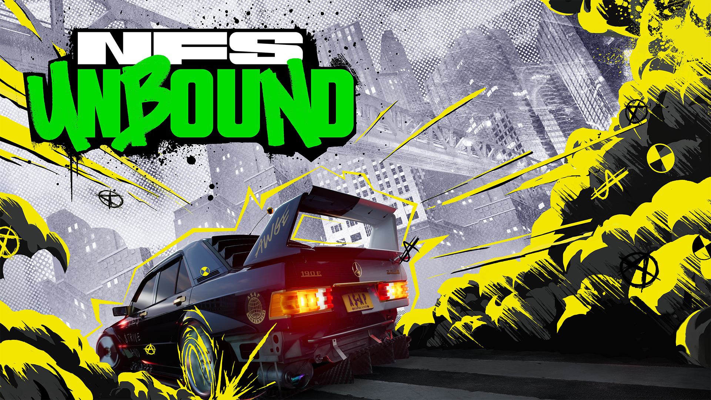

Forza Horizon 5
Forza Horizon 5 es un juego de carreras de mundo abierto desarrollado por Playground Games y publicado por Microsoft Studios. Ambientado en una representación ficticia del Reino Unido, el juego ofrece una amplia variedad de vehículos para conducir, eventos emocionantes, condiciones climáticas dinámicas y una comunidad en línea activa. Los jugadores pueden participar en carreras, explorar el mundo abierto y personalizar sus vehículos.

Need for Speed: Heat
Need for Speed: Heat es un juego de carreras desarrollado por Ghost Games y publicado por Electronic Arts. Ambientado en Palm City, un lugar inspirado en Miami, el juego ofrece emocionantes carreras callejeras, personalización de vehículos, persecuciones policiales y un modo historia inmersivo. Los jugadores pueden competir en eventos durante el día para ganar dinero y desbloquear nuevas partes y mejoras, y participar en carreras clandestinas por la noche para aumentar su reputación y desafiar a los mejores corredores de la ciudad.
Dirt Rally
Dirt Rally es un juego de carreras realista desarrollado por Kunos Simulazioni. Ofrece una experiencia de conducción precisa y detallada con un enfoque en la simulación. El juego cuenta con una amplia selección de vehículos, pistas reales y ficticias, y un motor de física avanzado que reproduce con precisión el comportamiento de los vehículos. Los jugadores pueden disfrutar de carreras en solitario, competir en línea y personalizar su experiencia de juego con mods creados por la comunidad.